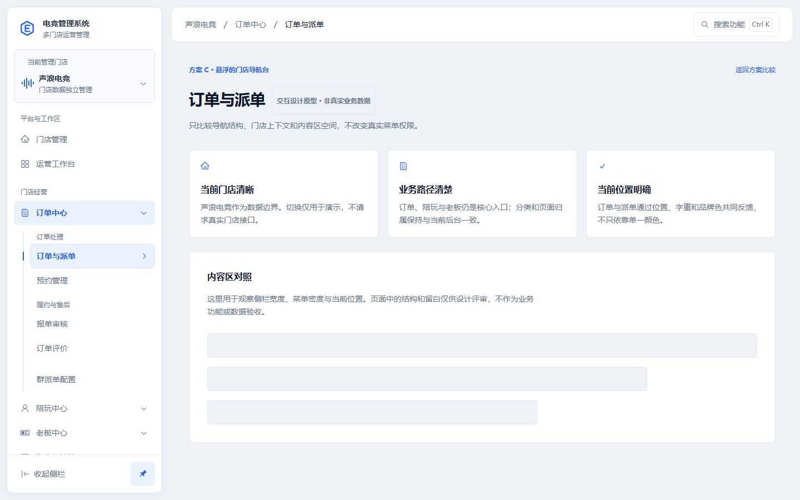
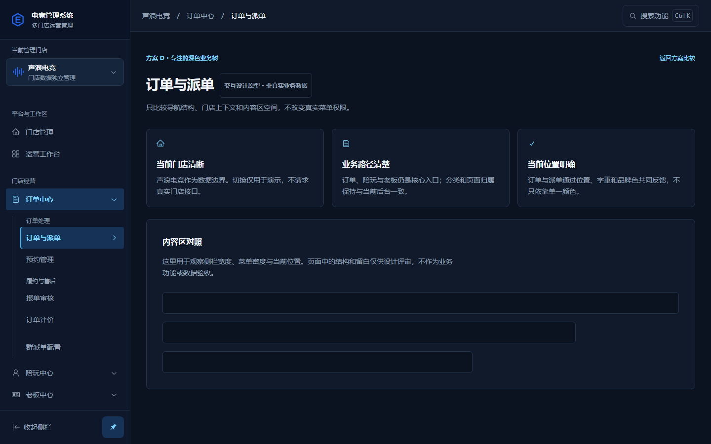
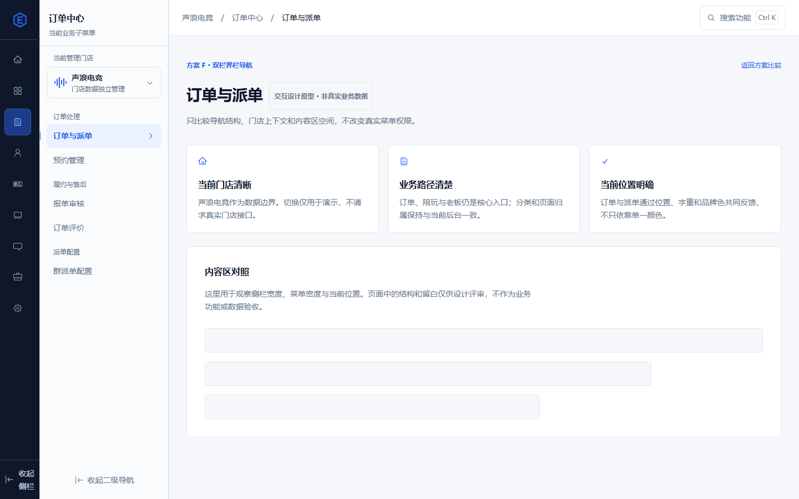
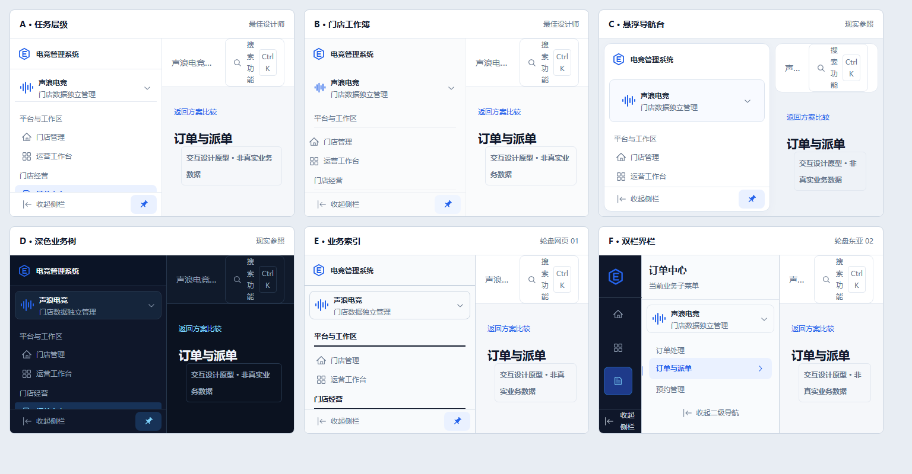

方案 C · 悬浮的门店导航台
shadcn Sidebar 的组合与独立滚动思路。品牌、门店与菜单有清晰容器，悬浮留白将导航和内容区分开。
适合希望门店边界明确、界面轻盈，同时保留单栏分类折叠的场景。
打开方案 C 完整原型
三个方向都保留业务分类、门店切换、菜单搜索与侧栏收起。打开完整原型可以实际点击；所有演示均不读取或修改真实业务数据。
本轮仅用于选择设计方向，尚未修改正式后台。你可以直接选择 C、D、F，也可以从下方备选里指出更合适的结构。

shadcn Sidebar 的组合与独立滚动思路。品牌、门店与菜单有清晰容器，悬浮留白将导航和内容区分开。
适合希望门店边界明确、界面轻盈，同时保留单栏分类折叠的场景。
打开方案 C 完整原型
Polaris references 的连续文本业务树。使用现有深海蓝，通过轻微位置与字重变化降低长菜单的扫读成本。
适合客服、店长等长时间在密集菜单中处理订单、财务与售后的场景。
打开方案 D 完整原型
从中文界栏提取分栏关系，不使用竖排或仿古装饰。一级业务固定在图标轨，当前业务子菜单独立呈现。
适合希望核心业务持续可见，并减少当前页面以外的子菜单干扰的场景。
打开方案 F 完整原型A 是清晰任务层级，B 是留白门店工作簿，E 是强网格业务索引。看中其中任何一张，都可以继续展开为完整原型。
